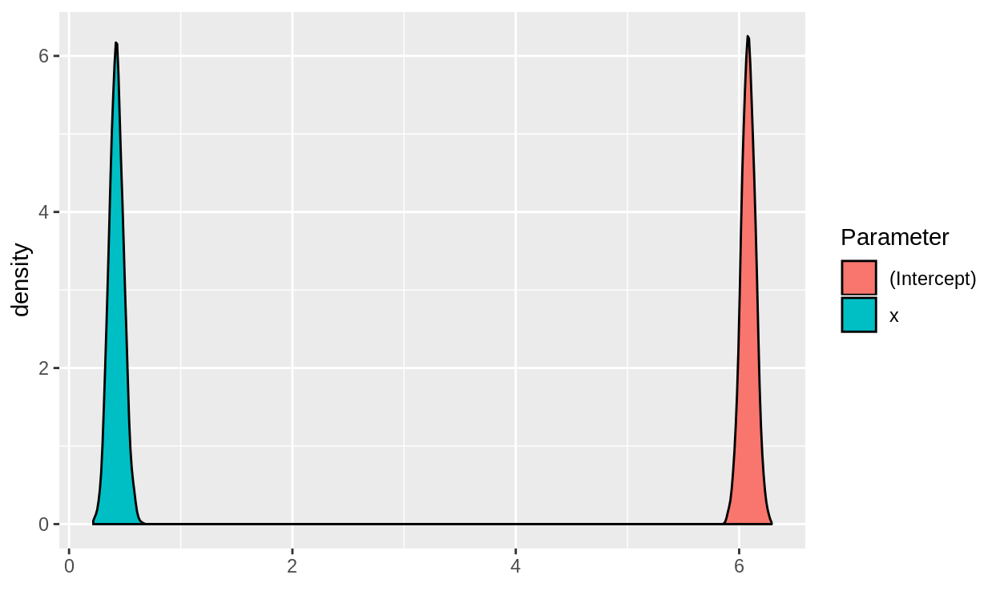
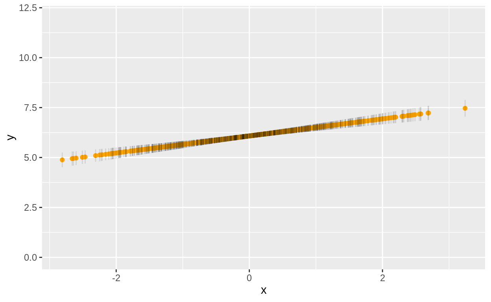

Welcome
This tutorial introduces to the Bayesian MCMC software, Stan.
Learning Objectives
Upon completion of this session, you will:
- Be able to write a simple model in Stan;
- Be able to fit the model to data;
- Be able to run models in
brmsandrstanarm - Be able to work with posterior draws
Introduction
Debating whether R or Python or Stata or SAS is best is so passé. Stan has made it so that you can fit any model you can imagine. In doing so, it achieved something none of the other languages could.
Stan is an MCMC implementation with an associated model specification language, like BUGS and JAGS. Unlike BUGS & JAGS, which use Gibbs samplers, Stan implements a Hamiltonian Monte Carlo algorithm. This yields more efficient posterior sampling for high dimension problems, i.e. precisely the sort of problems that benefit most from a Bayesian approach.
The beauty of Stan is that it separates the model specification problem (the bit that statisticians really care about) from the model fitting problem (the nuisance arduous task that feels more like it belongs on the desk of a mathematician or computer scientist). If you are working on a problem and none of the off-the-shelf solutions work, chances are you can create your own solution using Stan.
The Stan Language
Stan models are written in plain text files. A model is compiled to a C++ program that ultimately produces posterior samples. The analyst uses these to understand the data, produce predictions, make inferences and decisions. This section illustrates the essential elements of the Stan syntax. These are demonstrated using the 8 schools problem, a study of the effect of coaching for a standardised test in 8 schools.
Variable declarations
All variables must be declared with a type. In Bayesian modelling, variables constitutes both data and parameters. Stan is a strongly-typed language, so if you declare a variable to be an integer, trying to allocate it a decimal value will cause an error. This matches the behaviour of C and C++ but contrasts languages like R and Python where variables have no fixed type and can take any value.
Furthermore, lower and upper bounds can be specified when a variable is declared. For example, a probability is a real-valued number bounded between 0 and 1.
When such bounds exist, it is good practice to declare them because this will make posterior sampling more efficient.
The following code declares a variable named num_patients that takes integer values, and another named prob_tox that takes real numerical (i.e. decimal) values:
int num_patients;
real prob_tox;Notice the semicolons at the end of the lines? These are not optional. The Stan compiler will object if they are absent.
The following code adds sensible lower and upper bounds to our variables defined above. We would use this version instead. The bounds you use in your examples will naturally be determined by your modelling scenario; these are for illustration.
int<lower = 1> num_patients;
real<lower = 0, upper = 1> prob_tox;Stan also provides array versions of these types. To declare an array of four integers, each bounded below by 0, we would use code like this:
int<lower = 0> cohort_size[4];Arrays are zero-based, so the first element is cohort_size[0] and the last is cohort_size[3]. This is different to R.
The length of an array can itself be an integer variable:
int<lower = 1> num_cohorts;
int<lower = 0> cohort_size[num_cohorts];Code blocks
At the time of writing*, the syntax for a Stan model is split into several blocks. Code blocks are wrapped in curly braces, like this:
blockname {
// blah blah blah
}This is an opportune place to highlight that comments in Stan use a double slash.
There are several possible blocks defined in Stan, each with a distinct role. Depending on the complexity of the model, some blocks may be needed and some may not. The following simple Stan model uses code in the following four blocks:
dataparameterstransformed parametersmodel
We explore these in turn now.
The data block
This block declares data variables, i.e. those variables that you will observe in your experiment or research. You define the data-types and possibly also bounds of the data here.
In the 8 schools example, the data block is:
data {
int<lower=0> J; // number of schools
real y[J]; // estimated treatment effects
real<lower=0> sigma[J]; // s.e. of effect estimates
}J is the number of schools, with minimum value 0. y is an array of treatment effects in the J schools. Theoretically, these may take any real number value. sigma is an array of the standard errors of the treatment effects, also of length J. Since standard errors cannot be negative, the values for sigma are bounded below at 0.
Note that you do not provide the actual data values here. No variable is assigned a value in the block above, they are simply declared. Values for your data variables are provided when you fit the model.
The parameters block
A parameter in Stan is a variable that features in your model whose value is unknown. Parameters are estimated by generating samples from the posterior distribution using the Hamiltonian Monte Carlo algorithm. The returned model fit contains samples for each parameter (and transformed parameter - more on that later).
The parameters block in the 8 schools example is:
parameters {
real mu;
real<lower=0> tau;
real eta[J];
}What each of these parameters means in the context of the model is currently a mystery. All will be revealed in the model block. For now, note that parameters have a type, and perhaps also bounds.
Note also the similarity between the data and parameters blocks. Each simply declares variables. The difference is that you will provide values for the variables in data and Stan will produce samples for the variables in parameters.
The transformed parameters block
We meet more parameters in this block. As the name suggests, these parameters depend on other parameters. Posterior samples will be returned for these variables as well. This block can contain variable declarations and assignment statements. This is well illustrated in the 8 schools example:
transformed parameters {
real theta[J];
for (j in 1:J)
theta[j] = mu + tau * eta[j];
}First, a real-valued array is defined to hold values of theta for the J schools. Inside a for-loop, the values of theta are then calculated to be a linear combination of mu, tau and eta, three variables defined in the parameters block. Note that Stan uses the = symbol to assign values in contrast to the <- symbol used in R and BUGS. Also note the semicolon at the end of the line that calculates theta; and that it was not necessary to declare the counter variable, j.
The model block
This is the main event. The other blocks have been introducing the characters that now act out the plot in this drama. The model block contains statements that specify the prior distributions of the parameters and the likelihood of the data.
In 8 schools, the model block is:
model {
target += normal_lpdf(eta | 0, 1);
target += normal_lpdf(y | theta, sigma);
}The elements of eta have a unit normal prior distribution. That is, the prior mean and standard deviation are 0 and 1. The function normal_lpdf returns the log probability density (LPD) of a variable with given mean and standard deviation, specified after the vertical bar. The outcome variable y is assumed normal conditional on the expected value theta and standard deviation sigma. The line of code involving y is the model likelihood. Notice that the y values have known variance - sigma is an array of data values passed by the user.
No priors are identified for mu and tau so these variables are implicitly allocated improper uniform priors over all real values. The aggregate model log probability density (LPD) is added to the variable with the reserved keyword target. The += operator, ported from languages like C++ and Java, says “increment the variable on the left by the amount on the right”. If more priors were specified, they too would involve calls to increment the target. Stan uses target to work out how to sample from the joint posterior distribution of the parameters.
The model code block could have been written:
model {
eta ~ normal(0, 1);
y ~ normal(theta, sigma);
}Users may find this syntax more intuitive. Behind the scenes, the two versions are equivalent. It is important to know that in both cases, log probability density is being added to target.
This explanation of the model block suffices for now. The section below shows the 8 schools example in its entirety. Next, we will fit the model to some data.
8 schools in its entirety:
data {
int<lower=0> J; // number of schools
real y[J]; // estimated treatment effects
real<lower=0> sigma[J]; // s.e. of effect estimates
}
parameters {
real mu;
real<lower=0> tau;
real eta[J];
}
transformed parameters {
real theta[J];
for (j in 1:J)
theta[j] = mu + tau * eta[j];
}
model {
target += normal_lpdf(eta | 0, 1);
target += normal_lpdf(y | theta, sigma);
}Fitting the model
When the model is fit to data, stan samples from the joint posterior for all of the parameters (including transformed parameters).
The original 8 schools analysis looked at the effects of teaching, y, with associated standard errors, sigma:
To fit the model, we must provide compatible values for each of the variables in the data block. Stan expects the data to be provided as a list:
schools_dat <- list(
J = 8,
y = c(28, 8, -3, 7, -1, 1, 18, 12),
sigma = c(15, 10, 16, 11, 9, 11, 10, 18)
)Put the full Stan code for the model into a file called 8schools.stan somewhere on your system. You fit the model by running:
library(rstan)
# The following line ensures the model is compiled once:
rstan_options(auto_write = TRUE)
# Fit the model
fit <- stan(file = '~/Desktop/bootcamp/8schools.stan', data = schools_dat)## Warning in readLines(file, warn = TRUE): incomplete final line found on '/
## home/kristian/Desktop/bootcamp/8schools.stan'##
## SAMPLING FOR MODEL '8schools' NOW (CHAIN 1).
## Chain 1:
## Chain 1: Gradient evaluation took 6e-06 seconds
## Chain 1: 1000 transitions using 10 leapfrog steps per transition would take 0.06 seconds.
## Chain 1: Adjust your expectations accordingly!
## Chain 1:
## Chain 1:
## Chain 1: Iteration: 1 / 2000 [ 0%] (Warmup)
## Chain 1: Iteration: 200 / 2000 [ 10%] (Warmup)
## Chain 1: Iteration: 400 / 2000 [ 20%] (Warmup)
## Chain 1: Iteration: 600 / 2000 [ 30%] (Warmup)
## Chain 1: Iteration: 800 / 2000 [ 40%] (Warmup)
## Chain 1: Iteration: 1000 / 2000 [ 50%] (Warmup)
## Chain 1: Iteration: 1001 / 2000 [ 50%] (Sampling)
## Chain 1: Iteration: 1200 / 2000 [ 60%] (Sampling)
## Chain 1: Iteration: 1400 / 2000 [ 70%] (Sampling)
## Chain 1: Iteration: 1600 / 2000 [ 80%] (Sampling)
## Chain 1: Iteration: 1800 / 2000 [ 90%] (Sampling)
## Chain 1: Iteration: 2000 / 2000 [100%] (Sampling)
## Chain 1:
## Chain 1: Elapsed Time: 0.022378 seconds (Warm-up)
## Chain 1: 0.022865 seconds (Sampling)
## Chain 1: 0.045243 seconds (Total)
## Chain 1:
##
## SAMPLING FOR MODEL '8schools' NOW (CHAIN 2).
## Chain 2:
## Chain 2: Gradient evaluation took 3e-06 seconds
## Chain 2: 1000 transitions using 10 leapfrog steps per transition would take 0.03 seconds.
## Chain 2: Adjust your expectations accordingly!
## Chain 2:
## Chain 2:
## Chain 2: Iteration: 1 / 2000 [ 0%] (Warmup)
## Chain 2: Iteration: 200 / 2000 [ 10%] (Warmup)
## Chain 2: Iteration: 400 / 2000 [ 20%] (Warmup)
## Chain 2: Iteration: 600 / 2000 [ 30%] (Warmup)
## Chain 2: Iteration: 800 / 2000 [ 40%] (Warmup)
## Chain 2: Iteration: 1000 / 2000 [ 50%] (Warmup)
## Chain 2: Iteration: 1001 / 2000 [ 50%] (Sampling)
## Chain 2: Iteration: 1200 / 2000 [ 60%] (Sampling)
## Chain 2: Iteration: 1400 / 2000 [ 70%] (Sampling)
## Chain 2: Iteration: 1600 / 2000 [ 80%] (Sampling)
## Chain 2: Iteration: 1800 / 2000 [ 90%] (Sampling)
## Chain 2: Iteration: 2000 / 2000 [100%] (Sampling)
## Chain 2:
## Chain 2: Elapsed Time: 0.022985 seconds (Warm-up)
## Chain 2: 0.023815 seconds (Sampling)
## Chain 2: 0.0468 seconds (Total)
## Chain 2:
##
## SAMPLING FOR MODEL '8schools' NOW (CHAIN 3).
## Chain 3:
## Chain 3: Gradient evaluation took 2e-06 seconds
## Chain 3: 1000 transitions using 10 leapfrog steps per transition would take 0.02 seconds.
## Chain 3: Adjust your expectations accordingly!
## Chain 3:
## Chain 3:
## Chain 3: Iteration: 1 / 2000 [ 0%] (Warmup)
## Chain 3: Iteration: 200 / 2000 [ 10%] (Warmup)
## Chain 3: Iteration: 400 / 2000 [ 20%] (Warmup)
## Chain 3: Iteration: 600 / 2000 [ 30%] (Warmup)
## Chain 3: Iteration: 800 / 2000 [ 40%] (Warmup)
## Chain 3: Iteration: 1000 / 2000 [ 50%] (Warmup)
## Chain 3: Iteration: 1001 / 2000 [ 50%] (Sampling)
## Chain 3: Iteration: 1200 / 2000 [ 60%] (Sampling)
## Chain 3: Iteration: 1400 / 2000 [ 70%] (Sampling)
## Chain 3: Iteration: 1600 / 2000 [ 80%] (Sampling)
## Chain 3: Iteration: 1800 / 2000 [ 90%] (Sampling)
## Chain 3: Iteration: 2000 / 2000 [100%] (Sampling)
## Chain 3:
## Chain 3: Elapsed Time: 0.021561 seconds (Warm-up)
## Chain 3: 0.02321 seconds (Sampling)
## Chain 3: 0.044771 seconds (Total)
## Chain 3:
##
## SAMPLING FOR MODEL '8schools' NOW (CHAIN 4).
## Chain 4:
## Chain 4: Gradient evaluation took 3e-06 seconds
## Chain 4: 1000 transitions using 10 leapfrog steps per transition would take 0.03 seconds.
## Chain 4: Adjust your expectations accordingly!
## Chain 4:
## Chain 4:
## Chain 4: Iteration: 1 / 2000 [ 0%] (Warmup)
## Chain 4: Iteration: 200 / 2000 [ 10%] (Warmup)
## Chain 4: Iteration: 400 / 2000 [ 20%] (Warmup)
## Chain 4: Iteration: 600 / 2000 [ 30%] (Warmup)
## Chain 4: Iteration: 800 / 2000 [ 40%] (Warmup)
## Chain 4: Iteration: 1000 / 2000 [ 50%] (Warmup)
## Chain 4: Iteration: 1001 / 2000 [ 50%] (Sampling)
## Chain 4: Iteration: 1200 / 2000 [ 60%] (Sampling)
## Chain 4: Iteration: 1400 / 2000 [ 70%] (Sampling)
## Chain 4: Iteration: 1600 / 2000 [ 80%] (Sampling)
## Chain 4: Iteration: 1800 / 2000 [ 90%] (Sampling)
## Chain 4: Iteration: 2000 / 2000 [100%] (Sampling)
## Chain 4:
## Chain 4: Elapsed Time: 0.020967 seconds (Warm-up)
## Chain 4: 0.023322 seconds (Sampling)
## Chain 4: 0.044289 seconds (Total)
## Chain 4:The last line both compiles and fits the model. If needed, you can break the steps up, like:
model <- stan_model(file = '~/Desktop/bootcamp/8schools.stan')
fit <- sampling(model, data = schools_dat)This method is clear, for example, if you want to fit the model to lots of different datasets.
We can view a summary of the posterior samples with:
print(fit)## Inference for Stan model: 8schools.
## 4 chains, each with iter=2000; warmup=1000; thin=1;
## post-warmup draws per chain=1000, total post-warmup draws=4000.
##
## mean se_mean sd 2.5% 25% 50% 75% 97.5% n_eff Rhat
## mu 8.05 0.09 5.01 -1.66 4.77 7.99 11.30 18.26 3382 1
## tau 6.48 0.13 5.38 0.22 2.48 5.17 9.08 20.44 1822 1
## eta[1] 0.39 0.01 0.96 -1.53 -0.21 0.41 1.04 2.27 5113 1
## eta[2] -0.01 0.01 0.89 -1.76 -0.60 -0.01 0.57 1.77 5555 1
## eta[3] -0.20 0.01 0.89 -1.92 -0.82 -0.21 0.38 1.60 5260 1
## eta[4] -0.03 0.01 0.90 -1.83 -0.60 -0.03 0.55 1.77 5761 1
## eta[5] -0.37 0.01 0.88 -2.03 -0.96 -0.39 0.19 1.39 4492 1
## eta[6] -0.22 0.01 0.90 -1.97 -0.82 -0.23 0.39 1.57 5116 1
## eta[7] 0.32 0.01 0.89 -1.46 -0.26 0.34 0.91 2.06 4207 1
## eta[8] 0.04 0.01 0.91 -1.71 -0.57 0.02 0.65 1.79 5550 1
## theta[1] 11.38 0.13 8.32 -1.95 5.76 10.32 15.57 31.55 3976 1
## theta[2] 8.00 0.08 6.33 -3.87 3.93 7.91 11.84 20.97 5930 1
## theta[3] 6.23 0.11 7.47 -10.75 2.20 6.77 10.82 19.72 4562 1
## theta[4] 7.70 0.09 6.60 -5.84 3.74 7.65 11.72 21.07 5541 1
## theta[5] 5.13 0.09 6.38 -9.13 1.31 5.59 9.42 16.34 5051 1
## theta[6] 6.27 0.10 6.77 -8.39 2.32 6.36 10.48 19.50 4778 1
## theta[7] 10.61 0.10 6.71 -0.88 6.05 10.02 14.37 25.49 4482 1
## theta[8] 8.45 0.11 7.52 -5.86 4.15 8.15 12.40 25.17 4635 1
## lp__ -39.57 0.07 2.67 -45.52 -41.12 -39.30 -37.71 -35.11 1316 1
##
## Samples were drawn using NUTS(diag_e) at Tue Nov 19 08:08:50 2019.
## For each parameter, n_eff is a crude measure of effective sample size,
## and Rhat is the potential scale reduction factor on split chains (at
## convergence, Rhat=1).Univariate regression model
This example of a simple univariate regression model comes care of Ben Goodrich:
data {
int<lower = 1> N;
vector[N] x;
vector[N] y;
}
parameters {
real a; // intercept
real b; // slope
real<lower = 0> sigma; // noise standard deviation
}
model {
y ~ normal(a + b * x, sigma); // likelihood
}Notice how little information is needed from the user. The data and parameters blocks are essentially admin. The model block contains one simple command telling us that the response variable in the regression is normally distributed, conditional on a, b, x, with variability sigma.
Now imagine the technicalities that were omitted. We have not had to concern ourselves with how the data should be used to derive parameter estimates. Stan just works this out. All we had to worry about was specifying the relationship between the data and the parameters.
Exercise
Fit the above Stan univariate regression model to some data. Save the Stan model code somewhere convenient called Univariate.stan. Call the fit object fit.
- You could simulate data:
- Pick values for
N,a,bandsigma(for the model to fit in reasonable time, chooseNno greater than 1000…and if you want to recover your parameters, do not makesigmatoo big); - Simulate normal
xusingrnorm(N) - Simulate
epsilonusingrnorm(N, sd = sigma) - Calculate
yusing \(y = a + b x + \epsilon\) - Try to recover
a,bandsigmaby fitting the regression withdata = list(N = N, x = x, y = y).
- Pick values for
- If you prefer, you can either define
N,xandyby hand… - Or load data from some source.
rstan Example
Create the data:
N <- 1000
a <- 6
b <- 0.25
sigma <- 2
set.seed(123)
x <- rnorm(N)
epsilon <- rnorm(N, sd = sigma)
y <- a + b * x + epsilonRun a regular OLS regression:
summary(lm(y ~ x))##
## Call:
## lm(formula = y ~ x)
##
## Residuals:
## Min 1Q Median 3Q Max
## -6.0558 -1.3829 0.0085 1.4174 6.5823
##
## Coefficients:
## Estimate Std. Error t value Pr(>|t|)
## (Intercept) 6.08209 0.06366 95.543 < 2e-16 ***
## x 0.42609 0.06422 6.635 5.3e-11 ***
## ---
## Signif. codes: 0 '***' 0.001 '**' 0.01 '*' 0.05 '.' 0.1 ' ' 1
##
## Residual standard error: 2.013 on 998 degrees of freedom
## Multiple R-squared: 0.04225, Adjusted R-squared: 0.04129
## F-statistic: 44.03 on 1 and 998 DF, p-value: 5.299e-11Run the rstan model:
library(rstan)
rstan_options(auto_write = TRUE)
fit <- stan('stan_files/Univariate.stan', data = list(N = N, x = x, y = y))##
## SAMPLING FOR MODEL 'Univariate' NOW (CHAIN 1).
## Chain 1:
## Chain 1: Gradient evaluation took 7.7e-05 seconds
## Chain 1: 1000 transitions using 10 leapfrog steps per transition would take 0.77 seconds.
## Chain 1: Adjust your expectations accordingly!
## Chain 1:
## Chain 1:
## Chain 1: Iteration: 1 / 2000 [ 0%] (Warmup)
## Chain 1: Iteration: 200 / 2000 [ 10%] (Warmup)
## Chain 1: Iteration: 400 / 2000 [ 20%] (Warmup)
## Chain 1: Iteration: 600 / 2000 [ 30%] (Warmup)
## Chain 1: Iteration: 800 / 2000 [ 40%] (Warmup)
## Chain 1: Iteration: 1000 / 2000 [ 50%] (Warmup)
## Chain 1: Iteration: 1001 / 2000 [ 50%] (Sampling)
## Chain 1: Iteration: 1200 / 2000 [ 60%] (Sampling)
## Chain 1: Iteration: 1400 / 2000 [ 70%] (Sampling)
## Chain 1: Iteration: 1600 / 2000 [ 80%] (Sampling)
## Chain 1: Iteration: 1800 / 2000 [ 90%] (Sampling)
## Chain 1: Iteration: 2000 / 2000 [100%] (Sampling)
## Chain 1:
## Chain 1: Elapsed Time: 0.163118 seconds (Warm-up)
## Chain 1: 0.169286 seconds (Sampling)
## Chain 1: 0.332404 seconds (Total)
## Chain 1:
##
## SAMPLING FOR MODEL 'Univariate' NOW (CHAIN 2).
## Chain 2:
## Chain 2: Gradient evaluation took 3e-05 seconds
## Chain 2: 1000 transitions using 10 leapfrog steps per transition would take 0.3 seconds.
## Chain 2: Adjust your expectations accordingly!
## Chain 2:
## Chain 2:
## Chain 2: Iteration: 1 / 2000 [ 0%] (Warmup)
## Chain 2: Iteration: 200 / 2000 [ 10%] (Warmup)
## Chain 2: Iteration: 400 / 2000 [ 20%] (Warmup)
## Chain 2: Iteration: 600 / 2000 [ 30%] (Warmup)
## Chain 2: Iteration: 800 / 2000 [ 40%] (Warmup)
## Chain 2: Iteration: 1000 / 2000 [ 50%] (Warmup)
## Chain 2: Iteration: 1001 / 2000 [ 50%] (Sampling)
## Chain 2: Iteration: 1200 / 2000 [ 60%] (Sampling)
## Chain 2: Iteration: 1400 / 2000 [ 70%] (Sampling)
## Chain 2: Iteration: 1600 / 2000 [ 80%] (Sampling)
## Chain 2: Iteration: 1800 / 2000 [ 90%] (Sampling)
## Chain 2: Iteration: 2000 / 2000 [100%] (Sampling)
## Chain 2:
## Chain 2: Elapsed Time: 0.169804 seconds (Warm-up)
## Chain 2: 0.202273 seconds (Sampling)
## Chain 2: 0.372077 seconds (Total)
## Chain 2:
##
## SAMPLING FOR MODEL 'Univariate' NOW (CHAIN 3).
## Chain 3:
## Chain 3: Gradient evaluation took 3e-05 seconds
## Chain 3: 1000 transitions using 10 leapfrog steps per transition would take 0.3 seconds.
## Chain 3: Adjust your expectations accordingly!
## Chain 3:
## Chain 3:
## Chain 3: Iteration: 1 / 2000 [ 0%] (Warmup)
## Chain 3: Iteration: 200 / 2000 [ 10%] (Warmup)
## Chain 3: Iteration: 400 / 2000 [ 20%] (Warmup)
## Chain 3: Iteration: 600 / 2000 [ 30%] (Warmup)
## Chain 3: Iteration: 800 / 2000 [ 40%] (Warmup)
## Chain 3: Iteration: 1000 / 2000 [ 50%] (Warmup)
## Chain 3: Iteration: 1001 / 2000 [ 50%] (Sampling)
## Chain 3: Iteration: 1200 / 2000 [ 60%] (Sampling)
## Chain 3: Iteration: 1400 / 2000 [ 70%] (Sampling)
## Chain 3: Iteration: 1600 / 2000 [ 80%] (Sampling)
## Chain 3: Iteration: 1800 / 2000 [ 90%] (Sampling)
## Chain 3: Iteration: 2000 / 2000 [100%] (Sampling)
## Chain 3:
## Chain 3: Elapsed Time: 0.159142 seconds (Warm-up)
## Chain 3: 0.158258 seconds (Sampling)
## Chain 3: 0.3174 seconds (Total)
## Chain 3:
##
## SAMPLING FOR MODEL 'Univariate' NOW (CHAIN 4).
## Chain 4:
## Chain 4: Gradient evaluation took 3e-05 seconds
## Chain 4: 1000 transitions using 10 leapfrog steps per transition would take 0.3 seconds.
## Chain 4: Adjust your expectations accordingly!
## Chain 4:
## Chain 4:
## Chain 4: Iteration: 1 / 2000 [ 0%] (Warmup)
## Chain 4: Iteration: 200 / 2000 [ 10%] (Warmup)
## Chain 4: Iteration: 400 / 2000 [ 20%] (Warmup)
## Chain 4: Iteration: 600 / 2000 [ 30%] (Warmup)
## Chain 4: Iteration: 800 / 2000 [ 40%] (Warmup)
## Chain 4: Iteration: 1000 / 2000 [ 50%] (Warmup)
## Chain 4: Iteration: 1001 / 2000 [ 50%] (Sampling)
## Chain 4: Iteration: 1200 / 2000 [ 60%] (Sampling)
## Chain 4: Iteration: 1400 / 2000 [ 70%] (Sampling)
## Chain 4: Iteration: 1600 / 2000 [ 80%] (Sampling)
## Chain 4: Iteration: 1800 / 2000 [ 90%] (Sampling)
## Chain 4: Iteration: 2000 / 2000 [100%] (Sampling)
## Chain 4:
## Chain 4: Elapsed Time: 0.163236 seconds (Warm-up)
## Chain 4: 0.225862 seconds (Sampling)
## Chain 4: 0.389098 seconds (Total)
## Chain 4:fit## Inference for Stan model: Univariate.
## 4 chains, each with iter=2000; warmup=1000; thin=1;
## post-warmup draws per chain=1000, total post-warmup draws=4000.
##
## mean se_mean sd 2.5% 25% 50% 75% 97.5%
## a 6.08 0.00 0.06 5.96 6.04 6.09 6.13 6.21
## b 0.43 0.00 0.06 0.30 0.38 0.43 0.47 0.55
## sigma 2.02 0.00 0.05 1.93 1.98 2.01 2.05 2.11
## lp__ -1199.31 0.03 1.23 -1202.60 -1199.86 -1198.99 -1198.43 -1197.94
## n_eff Rhat
## a 4716 1
## b 4142 1
## sigma 3775 1
## lp__ 2100 1
##
## Samples were drawn using NUTS(diag_e) at Tue Nov 19 09:44:37 2019.
## For each parameter, n_eff is a crude measure of effective sample size,
## and Rhat is the potential scale reduction factor on split chains (at
## convergence, Rhat=1).brms
There are two general model fitting packages in R that write Stan code for you. You specify the model using R’s succinct model syntax that we have met before:
y ~ 1 + x + (1 | id)
and the packages take care of the Stan code for you. We will meet those packages int he next few sections.
brms writes models on demand. As such it supports a bewildering array of distributions, link functions, sub-model specifications, and group-level structures. This vast flexibility means that if you want to fit a particular type of model quickly, brms is probably your best bet.
To illustrate this point, let me recount a challenging modelling situation I encountered recently.
The data consisted of patient-reported frequencies of symptoms, with maximum value 20:
- The responses took integer values;
- At baseline, all patients reported some symptoms (i.e. non-zero responses);
- Post-baseline, many patients reported symptom frequencies of 0, reflecting resolution of all symptoms, including many patients on placebo;
- But with time, the symptoms tended to come back.
Thus, faithfully modelling this dataset required a model that:
- Handles integer responses;
- Allows repeated measures;
- Allows zero-inflated responses;
- Allows the zero-inflatedness to vary through time, and possibly by arm.
Satisfying point 1 is trivial. Point 2 is also straight forward to handle using, for example, lme4. Point 3 is where the model requirements get a bit specialist. And point 4 is where I was flumoxed for any suitable approach. But then I came across a zero-inflated analysis example in one of the brms vignettes. Eventually, I was able to fit the model with a call like:
fit1 <- brm(
bf(Response | trials(20) ~ 1 + Time + Time:Arm + (1 + Time | Id),
zi ~ Time),
data = data, family = zero_inflated_binomial("logit"), prior = prior,
cores = 4, seed = 123
)Exercise
Fit a simple linear regression using brms to the x and y values that you created before. Fit the model with a call to brm. To distinguish it from your rstan fit, call the fitted object fit1.
Notes:
- The first argument would be
y ~ x, just like before; - This function will need the data provided in a data-frame, e.g.
data = data.frame(x, y); - When omitted, the
familyparameter would default togaussian(). That will suffice here. - For this example, you need not specify the
priorparameter becausebrmswill choose minimally informative priors for you. Feel free to investigate different priors if you wish. In a proper analysis, you would generally specify and justify priors. - You can specify or omit
coresandseed.
How do your parameter estimates for a, b, and sigma compare to the rstan version?
brms Example
library(brms)
fit1 <- brm(y ~ x, data = data.frame(x, y))##
## SAMPLING FOR MODEL '7a84fd348503b58d0576e1965bf27d39' NOW (CHAIN 1).
## Chain 1:
## Chain 1: Gradient evaluation took 6.8e-05 seconds
## Chain 1: 1000 transitions using 10 leapfrog steps per transition would take 0.68 seconds.
## Chain 1: Adjust your expectations accordingly!
## Chain 1:
## Chain 1:
## Chain 1: Iteration: 1 / 2000 [ 0%] (Warmup)
## Chain 1: Iteration: 200 / 2000 [ 10%] (Warmup)
## Chain 1: Iteration: 400 / 2000 [ 20%] (Warmup)
## Chain 1: Iteration: 600 / 2000 [ 30%] (Warmup)
## Chain 1: Iteration: 800 / 2000 [ 40%] (Warmup)
## Chain 1: Iteration: 1000 / 2000 [ 50%] (Warmup)
## Chain 1: Iteration: 1001 / 2000 [ 50%] (Sampling)
## Chain 1: Iteration: 1200 / 2000 [ 60%] (Sampling)
## Chain 1: Iteration: 1400 / 2000 [ 70%] (Sampling)
## Chain 1: Iteration: 1600 / 2000 [ 80%] (Sampling)
## Chain 1: Iteration: 1800 / 2000 [ 90%] (Sampling)
## Chain 1: Iteration: 2000 / 2000 [100%] (Sampling)
## Chain 1:
## Chain 1: Elapsed Time: 0.158489 seconds (Warm-up)
## Chain 1: 0.376186 seconds (Sampling)
## Chain 1: 0.534675 seconds (Total)
## Chain 1:
##
## SAMPLING FOR MODEL '7a84fd348503b58d0576e1965bf27d39' NOW (CHAIN 2).
## Chain 2:
## Chain 2: Gradient evaluation took 2.8e-05 seconds
## Chain 2: 1000 transitions using 10 leapfrog steps per transition would take 0.28 seconds.
## Chain 2: Adjust your expectations accordingly!
## Chain 2:
## Chain 2:
## Chain 2: Iteration: 1 / 2000 [ 0%] (Warmup)
## Chain 2: Iteration: 200 / 2000 [ 10%] (Warmup)
## Chain 2: Iteration: 400 / 2000 [ 20%] (Warmup)
## Chain 2: Iteration: 600 / 2000 [ 30%] (Warmup)
## Chain 2: Iteration: 800 / 2000 [ 40%] (Warmup)
## Chain 2: Iteration: 1000 / 2000 [ 50%] (Warmup)
## Chain 2: Iteration: 1001 / 2000 [ 50%] (Sampling)
## Chain 2: Iteration: 1200 / 2000 [ 60%] (Sampling)
## Chain 2: Iteration: 1400 / 2000 [ 70%] (Sampling)
## Chain 2: Iteration: 1600 / 2000 [ 80%] (Sampling)
## Chain 2: Iteration: 1800 / 2000 [ 90%] (Sampling)
## Chain 2: Iteration: 2000 / 2000 [100%] (Sampling)
## Chain 2:
## Chain 2: Elapsed Time: 0.165389 seconds (Warm-up)
## Chain 2: 0.137971 seconds (Sampling)
## Chain 2: 0.30336 seconds (Total)
## Chain 2:
##
## SAMPLING FOR MODEL '7a84fd348503b58d0576e1965bf27d39' NOW (CHAIN 3).
## Chain 3:
## Chain 3: Gradient evaluation took 2.8e-05 seconds
## Chain 3: 1000 transitions using 10 leapfrog steps per transition would take 0.28 seconds.
## Chain 3: Adjust your expectations accordingly!
## Chain 3:
## Chain 3:
## Chain 3: Iteration: 1 / 2000 [ 0%] (Warmup)
## Chain 3: Iteration: 200 / 2000 [ 10%] (Warmup)
## Chain 3: Iteration: 400 / 2000 [ 20%] (Warmup)
## Chain 3: Iteration: 600 / 2000 [ 30%] (Warmup)
## Chain 3: Iteration: 800 / 2000 [ 40%] (Warmup)
## Chain 3: Iteration: 1000 / 2000 [ 50%] (Warmup)
## Chain 3: Iteration: 1001 / 2000 [ 50%] (Sampling)
## Chain 3: Iteration: 1200 / 2000 [ 60%] (Sampling)
## Chain 3: Iteration: 1400 / 2000 [ 70%] (Sampling)
## Chain 3: Iteration: 1600 / 2000 [ 80%] (Sampling)
## Chain 3: Iteration: 1800 / 2000 [ 90%] (Sampling)
## Chain 3: Iteration: 2000 / 2000 [100%] (Sampling)
## Chain 3:
## Chain 3: Elapsed Time: 0.172454 seconds (Warm-up)
## Chain 3: 0.233475 seconds (Sampling)
## Chain 3: 0.405929 seconds (Total)
## Chain 3:
##
## SAMPLING FOR MODEL '7a84fd348503b58d0576e1965bf27d39' NOW (CHAIN 4).
## Chain 4:
## Chain 4: Gradient evaluation took 2.7e-05 seconds
## Chain 4: 1000 transitions using 10 leapfrog steps per transition would take 0.27 seconds.
## Chain 4: Adjust your expectations accordingly!
## Chain 4:
## Chain 4:
## Chain 4: Iteration: 1 / 2000 [ 0%] (Warmup)
## Chain 4: Iteration: 200 / 2000 [ 10%] (Warmup)
## Chain 4: Iteration: 400 / 2000 [ 20%] (Warmup)
## Chain 4: Iteration: 600 / 2000 [ 30%] (Warmup)
## Chain 4: Iteration: 800 / 2000 [ 40%] (Warmup)
## Chain 4: Iteration: 1000 / 2000 [ 50%] (Warmup)
## Chain 4: Iteration: 1001 / 2000 [ 50%] (Sampling)
## Chain 4: Iteration: 1200 / 2000 [ 60%] (Sampling)
## Chain 4: Iteration: 1400 / 2000 [ 70%] (Sampling)
## Chain 4: Iteration: 1600 / 2000 [ 80%] (Sampling)
## Chain 4: Iteration: 1800 / 2000 [ 90%] (Sampling)
## Chain 4: Iteration: 2000 / 2000 [100%] (Sampling)
## Chain 4:
## Chain 4: Elapsed Time: 0.171162 seconds (Warm-up)
## Chain 4: 0.219437 seconds (Sampling)
## Chain 4: 0.390599 seconds (Total)
## Chain 4:fit1## Family: gaussian
## Links: mu = identity; sigma = identity
## Formula: y ~ x
## Data: data.frame(x, y) (Number of observations: 1000)
## Samples: 4 chains, each with iter = 2000; warmup = 1000; thin = 1;
## total post-warmup samples = 4000
##
## Population-Level Effects:
## Estimate Est.Error l-95% CI u-95% CI Eff.Sample Rhat
## Intercept 6.08 0.06 5.96 6.20 3791 1.00
## x 0.43 0.06 0.30 0.55 3854 1.00
##
## Family Specific Parameters:
## Estimate Est.Error l-95% CI u-95% CI Eff.Sample Rhat
## sigma 2.01 0.05 1.93 2.11 3562 1.00
##
## Samples were drawn using sampling(NUTS). For each parameter, Eff.Sample
## is a crude measure of effective sample size, and Rhat is the potential
## scale reduction factor on split chains (at convergence, Rhat = 1).rstanarm
In contrast, rstanarm has pre-written Stan models for a wide array of modelling situations, but not as wide as brms. Being pre-compiled, you do not need to wait for the Stan file to be produced. The compilation time is the delay between running a command and seeing the sampling log messages from Stan. Compilation takes about a minute, so doing away with it is generally desirable. Model fitting functions in rstanarm tend to use names that match the model fitting functions in base R and lme4 with the prefix stan_. That is, if you would normally be calling base R’s glm, the rstanarm equivalent is stan_glm. The disdvantage of pre-compilaiton is that rstanarm supports a narrower set of models.
In terms of development speed:
rstanarm > brms > rstan
but in terms of flexibility:
rstanarm < brms < rstan
so the approach you choose will depend on your goals.
To fit the above example in rstanarm, you can run:
library(rstanarm)
fit2 <- stan_lm(y ~ x, data = data.frame(x, y),
prior = R2(0.5, what = 'median'))##
## SAMPLING FOR MODEL 'lm' NOW (CHAIN 1).
## Chain 1:
## Chain 1: Gradient evaluation took 7e-06 seconds
## Chain 1: 1000 transitions using 10 leapfrog steps per transition would take 0.07 seconds.
## Chain 1: Adjust your expectations accordingly!
## Chain 1:
## Chain 1:
## Chain 1: Iteration: 1 / 2000 [ 0%] (Warmup)
## Chain 1: Iteration: 200 / 2000 [ 10%] (Warmup)
## Chain 1: Iteration: 400 / 2000 [ 20%] (Warmup)
## Chain 1: Iteration: 600 / 2000 [ 30%] (Warmup)
## Chain 1: Iteration: 800 / 2000 [ 40%] (Warmup)
## Chain 1: Iteration: 1000 / 2000 [ 50%] (Warmup)
## Chain 1: Iteration: 1001 / 2000 [ 50%] (Sampling)
## Chain 1: Iteration: 1200 / 2000 [ 60%] (Sampling)
## Chain 1: Iteration: 1400 / 2000 [ 70%] (Sampling)
## Chain 1: Iteration: 1600 / 2000 [ 80%] (Sampling)
## Chain 1: Iteration: 1800 / 2000 [ 90%] (Sampling)
## Chain 1: Iteration: 2000 / 2000 [100%] (Sampling)
## Chain 1:
## Chain 1: Elapsed Time: 0.028809 seconds (Warm-up)
## Chain 1: 0.029166 seconds (Sampling)
## Chain 1: 0.057975 seconds (Total)
## Chain 1:
##
## SAMPLING FOR MODEL 'lm' NOW (CHAIN 2).
## Chain 2:
## Chain 2: Gradient evaluation took 5e-06 seconds
## Chain 2: 1000 transitions using 10 leapfrog steps per transition would take 0.05 seconds.
## Chain 2: Adjust your expectations accordingly!
## Chain 2:
## Chain 2:
## Chain 2: Iteration: 1 / 2000 [ 0%] (Warmup)
## Chain 2: Iteration: 200 / 2000 [ 10%] (Warmup)
## Chain 2: Iteration: 400 / 2000 [ 20%] (Warmup)
## Chain 2: Iteration: 600 / 2000 [ 30%] (Warmup)
## Chain 2: Iteration: 800 / 2000 [ 40%] (Warmup)
## Chain 2: Iteration: 1000 / 2000 [ 50%] (Warmup)
## Chain 2: Iteration: 1001 / 2000 [ 50%] (Sampling)
## Chain 2: Iteration: 1200 / 2000 [ 60%] (Sampling)
## Chain 2: Iteration: 1400 / 2000 [ 70%] (Sampling)
## Chain 2: Iteration: 1600 / 2000 [ 80%] (Sampling)
## Chain 2: Iteration: 1800 / 2000 [ 90%] (Sampling)
## Chain 2: Iteration: 2000 / 2000 [100%] (Sampling)
## Chain 2:
## Chain 2: Elapsed Time: 0.027732 seconds (Warm-up)
## Chain 2: 0.02957 seconds (Sampling)
## Chain 2: 0.057302 seconds (Total)
## Chain 2:
##
## SAMPLING FOR MODEL 'lm' NOW (CHAIN 3).
## Chain 3:
## Chain 3: Gradient evaluation took 4e-06 seconds
## Chain 3: 1000 transitions using 10 leapfrog steps per transition would take 0.04 seconds.
## Chain 3: Adjust your expectations accordingly!
## Chain 3:
## Chain 3:
## Chain 3: Iteration: 1 / 2000 [ 0%] (Warmup)
## Chain 3: Iteration: 200 / 2000 [ 10%] (Warmup)
## Chain 3: Iteration: 400 / 2000 [ 20%] (Warmup)
## Chain 3: Iteration: 600 / 2000 [ 30%] (Warmup)
## Chain 3: Iteration: 800 / 2000 [ 40%] (Warmup)
## Chain 3: Iteration: 1000 / 2000 [ 50%] (Warmup)
## Chain 3: Iteration: 1001 / 2000 [ 50%] (Sampling)
## Chain 3: Iteration: 1200 / 2000 [ 60%] (Sampling)
## Chain 3: Iteration: 1400 / 2000 [ 70%] (Sampling)
## Chain 3: Iteration: 1600 / 2000 [ 80%] (Sampling)
## Chain 3: Iteration: 1800 / 2000 [ 90%] (Sampling)
## Chain 3: Iteration: 2000 / 2000 [100%] (Sampling)
## Chain 3:
## Chain 3: Elapsed Time: 0.025855 seconds (Warm-up)
## Chain 3: 0.02215 seconds (Sampling)
## Chain 3: 0.048005 seconds (Total)
## Chain 3:
##
## SAMPLING FOR MODEL 'lm' NOW (CHAIN 4).
## Chain 4:
## Chain 4: Gradient evaluation took 4e-06 seconds
## Chain 4: 1000 transitions using 10 leapfrog steps per transition would take 0.04 seconds.
## Chain 4: Adjust your expectations accordingly!
## Chain 4:
## Chain 4:
## Chain 4: Iteration: 1 / 2000 [ 0%] (Warmup)
## Chain 4: Iteration: 200 / 2000 [ 10%] (Warmup)
## Chain 4: Iteration: 400 / 2000 [ 20%] (Warmup)
## Chain 4: Iteration: 600 / 2000 [ 30%] (Warmup)
## Chain 4: Iteration: 800 / 2000 [ 40%] (Warmup)
## Chain 4: Iteration: 1000 / 2000 [ 50%] (Warmup)
## Chain 4: Iteration: 1001 / 2000 [ 50%] (Sampling)
## Chain 4: Iteration: 1200 / 2000 [ 60%] (Sampling)
## Chain 4: Iteration: 1400 / 2000 [ 70%] (Sampling)
## Chain 4: Iteration: 1600 / 2000 [ 80%] (Sampling)
## Chain 4: Iteration: 1800 / 2000 [ 90%] (Sampling)
## Chain 4: Iteration: 2000 / 2000 [100%] (Sampling)
## Chain 4:
## Chain 4: Elapsed Time: 0.027091 seconds (Warm-up)
## Chain 4: 0.028709 seconds (Sampling)
## Chain 4: 0.0558 seconds (Total)
## Chain 4:fit2## stan_lm
## family: gaussian [identity]
## formula: y ~ x
## observations: 1000
## predictors: 2
## ------
## Median MAD_SD
## (Intercept) 6.1 0.1
## x 0.4 0.1
##
## Auxiliary parameter(s):
## Median MAD_SD
## R2 0.0 0.0
## log-fit_ratio 0.1 0.0
## sigma 2.0 0.0
##
## ------
## * For help interpreting the printed output see ?print.stanreg
## * For info on the priors used see ?prior_summary.stanregRun that now on your data. Notice there is no lag whilst the model is compiled? Sampling commences immediately. Notice also that rstanarm demands you specify priors. Here, with very little rumination, I placed a prior on the \(R^2\) parameter, a variable which takes values on (0, 1). Again, in a real analysis, more thought on the priors is warranted.
Posterior Draws
The goal of MCMC fitting is getting samples from the joint posterior distribution and using these samples for inference. You can get at the posterior draws by simply running as.data.frame:
library(dplyr)
fit %>% as.data.frame()Exercise
Calculate the posterior probability from your model that your sigma parameter is greater than some critical value.
tidybayes
The tidybayes package lets you extract posterior samples (or draws) from the various MCMC methods in a standardised way. Two work-horse functions here are spread_draws to get adjacent columns of samples:
library(tidybayes)
spread_draws(fit, a, b) %>%
headand gather_draws to get stacked samples with an adjacent textual label designating the variable:
library(tidybayes)
gather_draws(fit, a, b) %>%
headgather_draws(fit, a, b) %>%
tailThese functions will work with fits from rstan, brms and rstanarm. Frustratingly, the three packages label the model parameters in different ways so sometimes a call to get_variables:
get_variables(fit2)## [1] "(Intercept)" "x" "sigma" "log-fit_ratio"
## [5] "R2" "accept_stat__" "stepsize__" "treedepth__"
## [9] "n_leapfrog__" "divergent__" "energy__"is necessary in order to know what to specify in the extraciton function:
gather_draws(fit2, `(Intercept)`, x) %>% headIn this tall format provided by gather_draws for instance, posterior density plots are simple using ggplot2:
library(ggplot2)
gather_draws(fit2, `(Intercept)`, x) %>%
ggplot(aes(x = .value, fill = .variable)) +
geom_density() +
labs('Posterior densities of parameter coefficients',
fill = 'Parameter', x = '')
Two other key functions in tidybayes are add_fitted_draws and add_predicted_draws. These use the posterior samples and the model matrix to calculate fitted and predicted values:
data.frame(x, y) %>%
add_fitted_draws(fit1) %>%
headThese samples can be grouped and summarised in various ways to condition on some variables and marginalise over others. For instance, to summarise the fitted \(y\) value at each \(x\), we can run:
data.frame(x, y) %>%
add_fitted_draws(fit1) %>%
group_by(x) %>%
mean_qi(.value) %>%
headThe mean_qi function provided by tidybayes summarises a grouped data-frame with a mean and quantile interval (95% by default, naturally).
To illustrate the usage of add_fitted_draws and add_predicted_draws, here are the fitted values with uncertainty bars for given \(x\) values:
data.frame(x, y) %>%
add_fitted_draws(fit1) %>%
group_by(x) %>%
mean_qi(.value) %>%
ggplot(aes(x = x, y = .value)) +
geom_point(col = 'orange') +
geom_errorbar(aes(ymin = .lower, ymax = .upper), alpha = 0.1) +
ylim(0, 12) +
labs(y = 'y')
and here are summaries from the posterior predictive distributions, again at different values of \(x\):
data.frame(x, y) %>%
add_predicted_draws(fit1) %>%
group_by(x) %>%
mean_qi(.prediction) %>%
ggplot(aes(x = x, y = .prediction)) +
geom_point(col = 'orange') +
geom_errorbar(aes(ymin = .lower, ymax = .upper), alpha = 0.1) +
ylim(0, 12) +
labs(y = 'y')
These can be loosely interpreted as being analogous to the confidence interval on the expected value at a given \(x\) and the confidence interval on a single new \(y\)-value for given \(x\).
These functions and the summary opportunities they provide are very useful when you have models with a lot going on and you want to visualise certain effects.